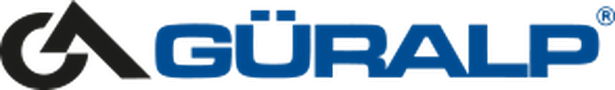
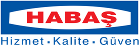
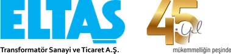
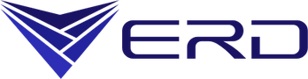
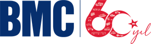
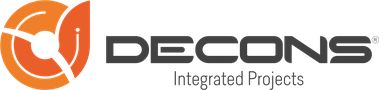
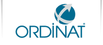
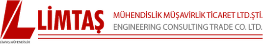
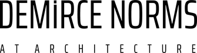
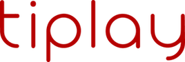

Güralp Vinç
1991'den bu yana Torbalı'dan dünyaya vinç ve kaldırma makineleri üreten Güralp Vinç'in Autodesk üretim çözümleriyle tasarım ve üretim süreçlerini nasıl geliştirdiğini video başarı hikayesinde izleyin.
Sistem Teknik (Electron)
Sistem Teknik'in Electron ürün ailesi geliştirme sürecinde Cadbim iş birliğiyle elde ettiği kazanımları video başarı hikayesinde izleyin.
Efe Kalıp Makina
Manisa merkezli makine ve yedek parça üreticisi, yeni bir CAD/CAM çözümü arayışıyla Autodesk Fusion'a geçti. Takım yolu optimizasyonu ve setup sheet özelliğiyle CNC işleme süreleri kısaldı, hata oranları düştü.
Norm Additive
Norm Holdings iştiraki, sensör/kamera tutucu bir sistemi oluşturan 5 ayrı sac metal parçayı Fusion Generative Design ile tek, hafifletilmiş bir parçaya indirdi. Tedarik süresi 3 haftadan 1 haftaya düştü, stok ve montaj maliyeti azaldı.

Habaş
Türkiye'nin önde gelen çelik üreticilerinden Habaş, basınçlı kap ve endüstriyel gaz tüpü tasarımlarını Inventor ve Inventor Nastran ile FEA analiziyle doğruluyor — doğru malzeme ve üretim yöntemi seçimiyle pazara çıkış süresi kısalıyor.

Edvan
İzmir merkezli toz toplama ve endüstriyel havalandırma sistemleri üreticisi ED-VAN, yalnızca AutoCAD kullandığı süreçlerini Cadbim iş birliğiyle PD&M Collection ve Vault PDM'e taşıyarak veri yönetimi ve KPI performansını iyileştirdi.
Eys Metal
Gübre yönetimi ekipmanları ihracatçısı Eys Metal, 3D katı model eksikliği nedeniyle CAM otomasyonundan yararlanamıyordu. Inventor ile 3D modellemeye geçerek üretim departmanlarıyla hızlı iş birliği kurdu, servis taleplerini azalttı.

Kutlusan Kafes
2D DWG dosyalarının 3D katı modele taşınması ve ERP entegrasyonu ihtiyacı olan Kutlusan Kafes, montaj analizi ve doküman yönetimini dijitalleştirerek üretim ve saha kurulum süreçlerini iyileştirdi.

Eltaş
İzmir merkezli transformatör üreticisi Eltaş, Cadbim iş birliğiyle 3 boyutlu tasarıma geçerek iki haftalık tasarım sürecini yarım güne indirdi. Revizyonlar hızlandı, üretim öncesi maliyetler düştü, hata oranı sıfıra yaklaştı.

Erdemgiller
Otomotiv ve tarım makineleri yedek parça üreticisi Erdemgiller, Cadbim'in eğitim ve teknik desteğiyle 3 boyutlu tasarıma geçti. İmalat detaylarının oluşturulma süresi kısaldı, verimlilik 2-3 kat arttı, iş ortaklarıyla veri paylaşımı kolaylaştı.

BMC
Türk otomotiv sektörünün öncü kuruluşu BMC, Cadbim'in uzun yıllara dayanan teknik destek ve eğitimiyle 2 boyuttan 3 boyutlu tasarım ve modellemeye geçti. Tasarım süreleri günler yerine tek güne indi, imalat hataları büyük ölçüde önlendi.

Decons
30 yıllık geçmişe sahip EPC/Turnkey firması Decons, 2D tasarımdan Autodesk AEC Collection ve Revit tabanlı BIM iş akışına geçti. Cadbim'in Revit ve BIM eğitimleriyle proje kalitesi arttı, süreler kısaldı, pazar rekabet gücü güçlendi.
Bedesten Ahşap
1953'ten beri hizmet veren ahşap mobilya firması, Revit, AutoCAD ve 3ds Max eğitimleriyle sunum ve görselleştirme kalitesini artırdı — rekabetçi tekliflerde fark yaratan gerçekçi tasarım sunumları üretti.

Ordinat İnşaat
1997'den beri petrokimya, doğalgaz ve enerji sektörlerinde taahhüt işleri yürüten Ordinat, artan proje yoğunluğu ve dosya boyutu sorunlarını AutoCAD'den Plant 3D iş akışına geçerek çözdü.

Limtaş Mühendislik
İzmir merkezli inşaat ve geoteknik mühendisliği firması Limtaş, "Sıfır Hata" yaklaşımını BIM tabanlı bir iş akışına taşıdı. Cadbim'in kurulum, danışmanlık ve eğitim desteğiyle Autodesk Building Design Suite üzerinden yürütülen projelerde uluslararası ekiplerle sorunsuz iş birliği kurdu.
Epig Mimarlık
İzmir'in köklü mimarlık ofislerinden Epig Mimarlık, Cadbim'in eğitim ve danışmanlık desteğiyle tüm projelerini Revit Architecture tabanlı BIM iş akışına taşıdı. Sonuç paftası üretim süresi kısaldı, çok disiplinli projelerde koordinasyon kalitesi arttı.

Demirce
İzmir merkezli mimarlık ofisi Demirce, Cadbim'in eğitim ve danışmanlık desteğiyle projelerini BIM tabanlı bir platforma taşıdı. Revizyonlar tüm katmanlarda anında yansıyor, insan hatası büyük ölçüde ortadan kalkıyor — Folkart Life Bornova ve İlayda Avantgarde Hotel gibi projelerde tasarım süreci hızlandı.
Funjitsu Oyun ve Teknoloji
Türkiye'nin öncü oyun stüdyolarından Funjitsu Game, RPG oyunları için animasyon ve karakter tasarım hattını Autodesk Maya ile geliştirerek yüksek kaliteli 3D modeller ve platformlar arası optimize içerik üretti.

Tiplay Studio
Türkiye'nin hızla büyüyen oyun geliştirme ekosistemlerinden Tiplay Studio, küresel büyüme hedefi ve pandemi döneminde uzaktan iş birliği ihtiyacını Autodesk Maya tabanlı iş akışıyla çözerek dünya çapında oyunlar üretti.